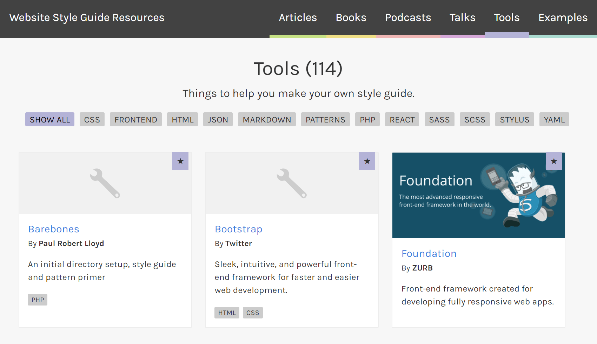

What is Fractal?
https://fractal.build
Build. Document. Integrate.
A powerful component library &
styleguide that fits the way you work
Hold up!
What's all this talk of styleguides,
pattern libraries and design systems?
Website Style Guide Resources
496 real-world examples / 114 tools available

Historically
(from my own experience)
A CMS developer would be provided with a...
- PSDs (or worse, JPEGs) - to be "slice-n-diced"
- Static HTML - better, but still to be "slice-n-diced"
Fractal Demo
We could use these templates!

But how?
Means to an end
But how? (part 2)
- What is the page layout, content design?
- How would we make the view-models?
- How would we render the Handlebars templates?
Umbraco Demo
Lessons learnt